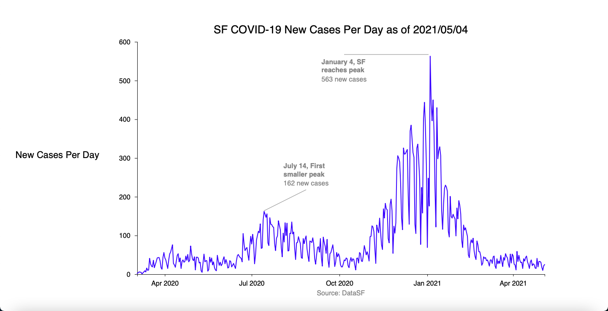
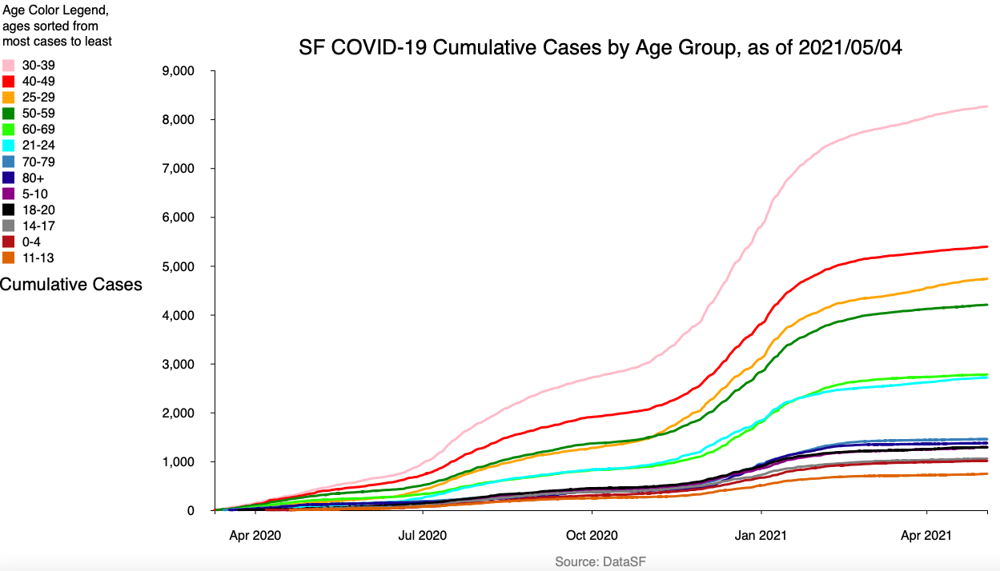
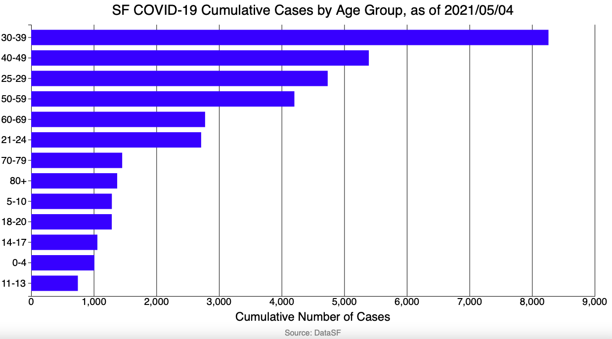
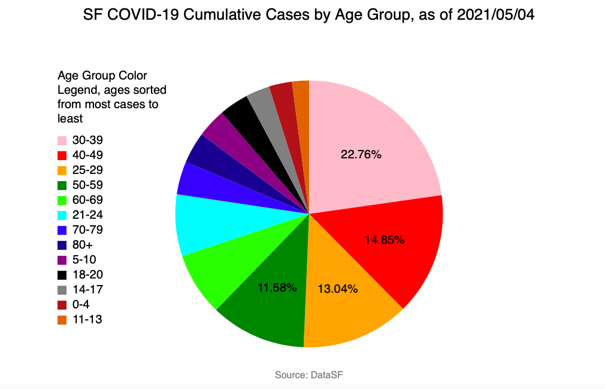
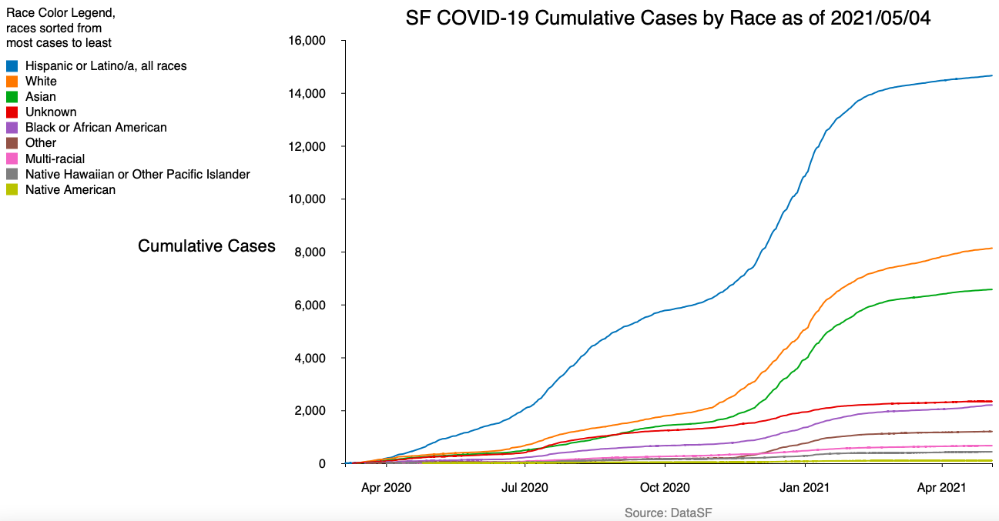
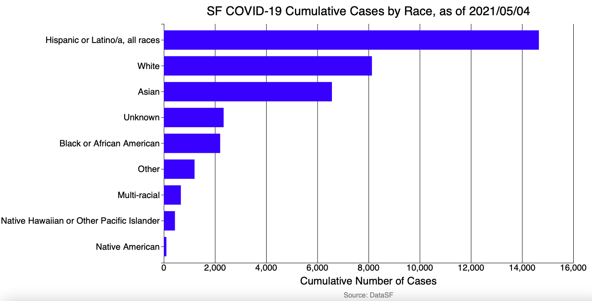
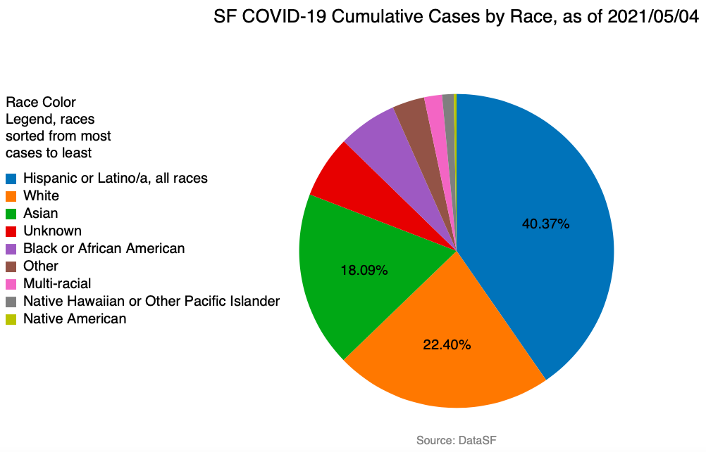
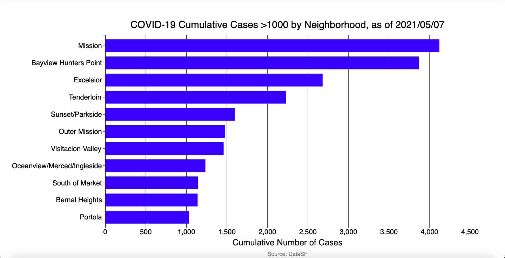

| Back |
|---|
by Peter Cuddihy
San Francisco is a city that has a lot of inequality and disparity between its people. It has some of the richest people in the world, as well as a massive population of homeless people.
It also has a wide diversity of people across age, race, and neighborhood lines. The goal of this project is to show how those groups have been affected by COVID-19, to highlight the most affected groups.
First, let's take a look at the whole city. The number of cases per day for the whole city is valuable as it allows us to see how the city handled COVID-19 and when the worst times were. Just from the chart below, it is clear to see how the city has been affected by COVID-19 at a general scale. COVID-19 first peaked in July of 2020, then started declining in rate. However, that was to be for a short time only. It did look like the city was recovering somewhat with the cases per day decreasing, only for cases to start rebounding around November.Any hope of reopening was squashed with the rebound, which saw a peak of 563 new cases on January 4. As the vaccine has been rolled out and more people receive, the number of new cases per day has dropped significantly

When the data gets more specific, it is easier to see how different groups have been affected. What I want to look at first is how different age groups have been affected by COVID-19. There are 13 age groups to look at: 0-4, 5-10, 11-13, 14-17, 18-20, 21-24, 25-29, 30-39, 40-49, 50-59, 60-69, 70-79, and 80+. Even with the data split up in this way, it is clear that people from 20-50 are the people in San Francisco who were most susceptible, right? Not exactly, given that there are less people in the other groups. What is happening is that the top groups have the most amount of people living in the city. Per World Population Review, 37.5% of the city's population is 25 to 44 and the average age is 38.5 years old. With this in mind, it is still interesting to see how only a couple age groups dominate the rest, with three age groups taking up half of the total cases. From what we've seen so far, the group that would probably be affected the most is people 20-50 years old.



Next, I want to look at how different races have been affected by COVID-19. There are 9 races to look at: Hispanic or Latino/a (all races), White, Asian, Black or African American, Native American, Native Hawaiian or Other Pacific Islander, Multi-racial, Other, and Unknown. With 40.37% of the total cases, Hispanic or Latino/a (all races) takes up most of the cases. White follows with 22.40%, while Asian has the third most cases with 18.09%. Just those three races take up >80% of the total. And, per the census, Hispanic or Latino/a is only 15.2% of the population of California. So, with that overrepresentation, combined with the previous knowledge of the ages most affected, we can start to see what groups of people have been more adversely affected than others. From what we've seen so far, the group that would probably be affected the most is people 20-50 years old that are Hispanic or Latino/a.



Finally, I want to take a quick look at how different neighborhoods have been affected by COVID-19. I have limited the neighborhoods to only be the neighborhoods with over a thousand cases since there are so many neighborhoods. I think this makes it easier to see which have been the ones that have been affected the most by COVID-19. As it shows, the Mission district has the most amount of cases. Per CityData, about 39% of the population of the Mission district is Hispanic or Latino/a people. So, when each level of data is understood together, they combine to form the picture of who was at most risk to catch COVID-19. From what we've seen, the most likely to be affected would a Hispanic or Latino/a person, from 20 to 50 years old, that lives in the Mission district.

Without looking at the data altogether, it would be more difficult to see a pattern or to see the story of a person in the data. By having multiple breakdowns, one by age, one by race, and one by neighborhood, it becomes easier to identify and highlight the people that were most at risk and address the needs of that community. Without the breakdowns, each problem might be dealt with separately without the right understanding on how they interact with each other.